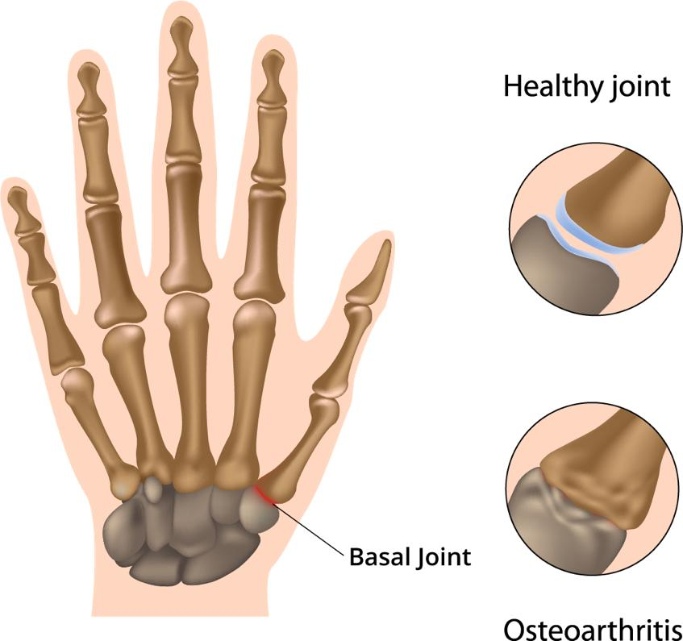
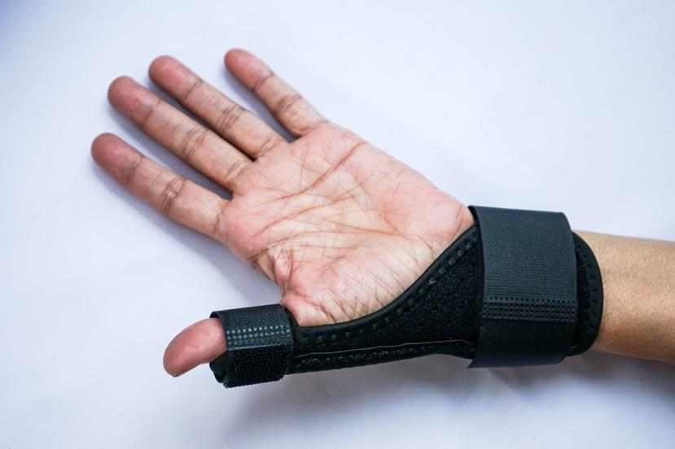

Basal joint arthritis is a type of arthritis that affects the base of your thumb. This joint is called the basal joint or trapeziometacarpal joint. It connects the thumb to the wrist. This joint helps you pinch, grip, and move your thumb in many directions.
When you have arthritis in this joint, the smooth cartilage that cushions the bones wears away. This can cause pain, swelling, and trouble using your hand.

Basal joint arthritis usually happens as we get older. Over time, the joint is used again and again, and the cartilage wears down. This kind of arthritis is called osteoarthritis.
You may be more likely to get this condition if you:
Are over age 40
Are female
Have had a thumb injury
Have family members with arthritis
Use your thumbs a lot for work or hobbies, with activities such as sewing, typing, or sports
You may notice:
Pain at the base of your thumb
Swelling near the thumb and wrist
Weak grip or trouble pinching
A feeling of grinding in the joint
Stiffness, especially in the morning
A bony bump at the base of the thumb
Your care team may:
Ask about your symptoms: They may ask when your symptoms started and what makes them worse.
Check your hand: Your care team may move and examine your thumb, wrist, and hand to see how they feel and function.
Do imaging tests: X-rays are done to see if there is joint or bone damage.
You usually do not need blood tests for this type of arthritis.

Most people can manage this condition without surgery.
To help with pain and swelling, you may take a nonsteroidal anti-inflammatory drug, or NSAID. Common NSAIDs include ibuprofen, brand name Advil® or Motrin®, and naproxen, brand name Aleve®. Tell your care team first if you take blood thinners, have a history of bleeding or stomach ulcers, or have a history of kidney or liver disease.
Take medicine as directed. Taking too much can be harmful, even if you can get the medicine without a prescription.
A brace: Your care team may suggest a thumb brace to rest the joint. You may want to try wearing it overnight and from time to time during the day.
Cold packs: Cold reduces swelling. Try applying ice packs for 5 to 15 minutes a few times a day. Do not put a cold pack right on your skin. Place a soft cloth in between.
Warm packs: Warmth can ease stiffness. Try a heating pad, a microwaveable gel pack wrapped in a towel, or a warm washcloth. Apply heat 3 times a day for 15 to 20 minutes at a time.
Steroid injections: Your care team may be able to inject a corticosteroid right into the joint to help with pain and swelling. Corticosteroids are strong medicines that can last for weeks to months. The number of shots you can get over your lifetime is limited. Your care team will explain.
Avoid overuse: Give your thumb breaks during activities.
Use adaptive tools: Tools with large handles can make gripping easier.
Protect your joints: Use both hands to lift items, or use tools that make tasks easier.
Hand therapy: Your care team may suggest you work with a specialist to teach you gentle exercises to help you keep strength and motion.
At-home exercises: Your care team may show you how to stretch or strengthen your thumb safely.
Thank you for trusting us with your care. We are here to support you and want you to feel your best. Contact us with any questions.
IF YOU HAVE A MEDICAL EMERGENCY, CALL 911 OR GO TO THE EMERGENCY ROOM.
The information presented is intended for general information and educational purposes. It is not intended to replace the advice of your health care provider. Contact your health care provider if you believe you have a health problem.
Last updated May 2025
© 2025 Mytonomy, Inc. All rights reserved.